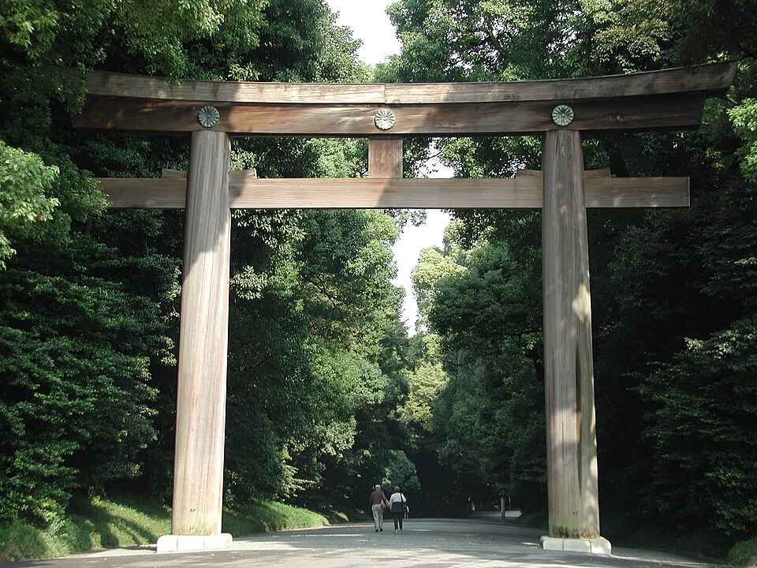

Photo credit: Akonnchiroll, CC BY-SA 4.0; Rs1421, CC BY-SA 3.0; Harajuku at English Wikipedia, Public domain (Wikimedia Commons)
Meiji Jingu (with Harajuku if wanted)
A · Strongest fitA quiet forest shrine in the middle of the city, then the fashion streets of Harajuku if you want them. Free, easy and the strongest all-round fit. The gate closes at 16:10 in November, so go in the morning or early afternoon.
What to see: The forest approach and main shrine are the core. The Inner Garden (about 500) and the museum (about 1,000) are optional paid extras per a blog [S33]. Harajuku and Omotesando are an add-on for another 1.5-2.5 hours (iteration 1) [S73].
Main tradeoff: Gate closes at 16:10 in November, so it is a morning or early-afternoon stop.
Why it ranks here: Free, central and the best-rated big Tokyo sight on Google Maps (4.7 (53,883)); the main constraint is that the gate closes before 16:30.
More details and sources
- Traveler evidence
- Seen 2026-10-19/20: Google Maps 4.7 (53,883) [S60]; TripAdvisor 4.4 (8,517) [S63]; marketplace guided walks Viator 5.0 (591) and 5.0 (539), GetYourGuide 4.9 (620) and 4.9 (433) [S66, S68] (Viator and TripAdvisor tour counts are one pool). Blogs: Beautifully Travelled (Sep 2026) says it "costs nothing, takes about an hour" [S33]; Japan Local Experience (updated 2026-10-05) says to go early [S35]. Both are single-author posts, not counts.
- Location and access
- Harajuku or Meiji-jingumae stations (iteration 1) [S73]. Allow 400-800 yen return.
- Time and physical effort
- About 1 hour at the shrine [S33]; 2.5-4 hours with Harajuku (iteration 1) [S73]. Wide gravel paths and a lot of standing.
- Approximate cost
- Free. Inner Garden 500 and museum 1,000 are blog figures, not read on an official page [S33].
- Crowds and booking
- No booking. The shrine opens at sunrise, and the earlier you go the calmer it is [S03, S35]. I did not find a queue-time source. Mid-November children's festival crowds (Shichi-go-san) may still linger (model knowledge, unverified).
- Late-November / early-December fit
- The official hours are November 06:10-16:10 and December 06:40-16:00; some facilities inside close earlier (mainly 09:00-16:00) [S03]. Wed 2 Dec is usable only in the morning, and the shrine is not an arrival-evening option.
- Safety and constraints
- Active worship site: follow photography signs. Gravel is awkward for wheeled luggage. No pork or alcohol requirement.
- Uncertainty / what to verify
- Inner Garden and museum prices and hours (blog only); any weekend wedding or festival crowds; Reddit not opened.
- Sources
- S03, S33, S35, S60, S63, S66, S68, S73